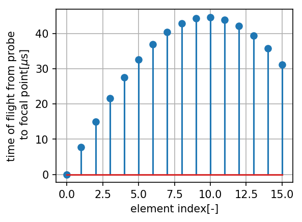
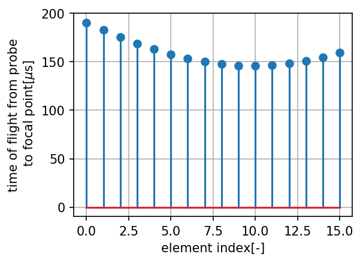

Strathclyde (python module)¶
-
class
strathclyde.LinearArray(radiation_frequency=40000.0, sound_velocity=343, sampling_density=17, passive_aperture=0.012, element_pitch=0.001, element_width=None, element_count=16, focal_point=array([0., 0., 0.2]))[source]¶ Calculates some basic properties of a linear phased array probe, and then generates input data for HandyBeam and OnScale/PZFlex
-
__init__(radiation_frequency=40000.0, sound_velocity=343, sampling_density=17, passive_aperture=0.012, element_pitch=0.001, element_width=None, element_count=16, focal_point=array([0., 0., 0.2]))[source]¶ Create a new linear phased array probe.
Parameters: - radiation_frequency (float) – intended fundamental radiation frequency
- sound_velocity (float) – sound velocity in the medium interfacing the probe
- sampling_density (int) – for output to HandyBeam, how many sampling points create per lambda. Default=17
- passive_aperture (float) – size of the passive aperture
- element_pitch (float) – distance between centres of elements
- element_width (float) – active-aperture size of the array element. Set to none to use
element_pitch/2. Default: None. - element_count (int) – How many elements in this array. Default: 16
- focal_point (tuple(float)) – xyz location of the intended focal point. default: (0.0e-3,0.0e-3,200e-3)
-
active_aperture¶ calculated size of the active aperture [m]
-
active_aperture_focus_power_estimate¶ estimated focal spot size in the active plane, for given selected focal point location
-
active_aperture_near_field¶ estimated distance from the probe surface to the transition between near and far field,[m]
-
dx_simulation¶ distance between points for sampling the radiating surfaces with radiating points, in [m]
-
element_centre_locations¶ location of the centres of the elements
format:
np.array(n,3),where first dimension,
n- count of elements,2nd dimension:
[idx,:]=np.array((x,y,z))- x,`y`,`z` components of the location vector; idx - element index
-
element_gap¶ calculated gap width between elements
-
focal_distance¶ distance from probe centre to the selected focal point,[m]
-
focal_laws¶ generate focal laws – the delays needed for each array element to focus the wave into the focal point
Returns: focal_laws=np.array(), shaped [ self.element_count,]
-
focusing_power_estimate(focal_distance, aperture)[source]¶ estimated size of the focal point given aperture, distance and envinroment parameters,[m]
-
passive_aperture_focus_power_estimage¶ estimated natural focus spot size in the passive plane
-
passive_aperture_near_field¶ estimated distance from the probe surface to the transition between near and far field,[m]
-
time_of_flight(source=array([0., 0., 0.]), destination=array([0., 0., 1.]))[source]¶ calculate time of flight between two points
Point is a tuple e.g.
np.array(0.0,0.0,1.0)does
np.sqrt(np.sum((destination-source)**2))/self.sound_velocity
-
time_of_flight_probe_to_focal_point¶ calculate and return all Time of Flights between probe elements and the focal point
Returns: tofs=np.array(), shaped [ self.element_count,]
-
visualize_array_elements(figsize=(4, 3), dpi=150, filename=None)[source]¶ create a 2D top-down plot of how do the array element patches look like
Example:

Parameters: - figsize – size in inches of the created figure canvas
- dpi – resolution in points-per-inch for the figure canvas
- filename – file name to save to. For example,
output.png. Do attach a .png at the end. DefaultNone
Returns: displays a figure, and optionally, saves it to a file.
-
visualize_focal_laws(figsize=(4, 3), dpi=150, filename=None)[source]¶ plots computed firing delays (focal laws) for each probe element
Example:
Parameters: - figsize – size in inches of the created figure canvas
- dpi – resolution in points-per-inch for the figure canvas
- filename – file name to save to. For example,
output.png. Do attach a .png at the end. DefaultNone
Returns: displays a figure, and optionally, saves it to a file.
-
visualize_time_of_flight(figsize=(4, 3), dpi=150, filename=None)[source]¶ plots the computed time-of-flight values for each probe element
Example:
Parameters: - figsize – size in inches of the created figure canvas
- dpi – resolution in points-per-inch for the figure canvas
- filename – file name to save to. For example,
output.png. Do attach a .png at the end. DefaultNone
Returns: displays a figure, and optionally, saves it to a file.
-
wavelength¶ wave length in given media, in meters [m]
-
wavenumber¶ count of waves per meter, in [1/m]
-
wavenumber_rotations¶ count of rotations per meter, in [radians/m]
-

Indices and tables¶
Back to Strathclyde (python module)
Disclaimer: If anything uncool happens, it’s Your fault. If it breaks, you get to keep both pieces.
Licence (documentation): Creative Commons CC BY-NC-SA 4.0
Licence (source code): Apache 2.0
This project has received funding from the European Union’s Horizon 2020 research and innovation programme under grant agreement No 737087.